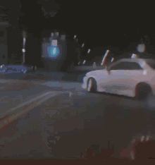

Teoria:
- JavaScript powstała w 1995 roku.
- JavaScript jest językiem skptowym ponieważ, nie musi zostać skompilowany do kodu maszynowego, aby można było zobaczyć efekty jego działania;
- Wykorzystywany jest miedzy innymi w dnamicznym tworzeniu treśći ston WWW, konrolowanie multimediów oraz animację obazków;
- Jest on bezpieczny, ponieważ ma znacznie ograniczne uprawninia dostępu do zasobów koputera;
- JS jest językiem obiektowym, ale nie posiada klas;
